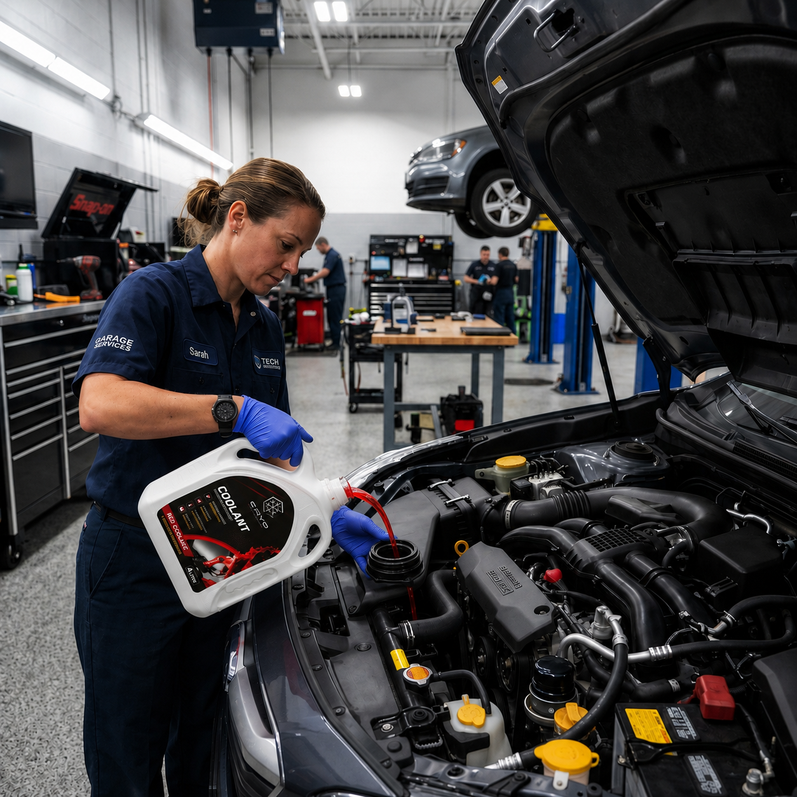
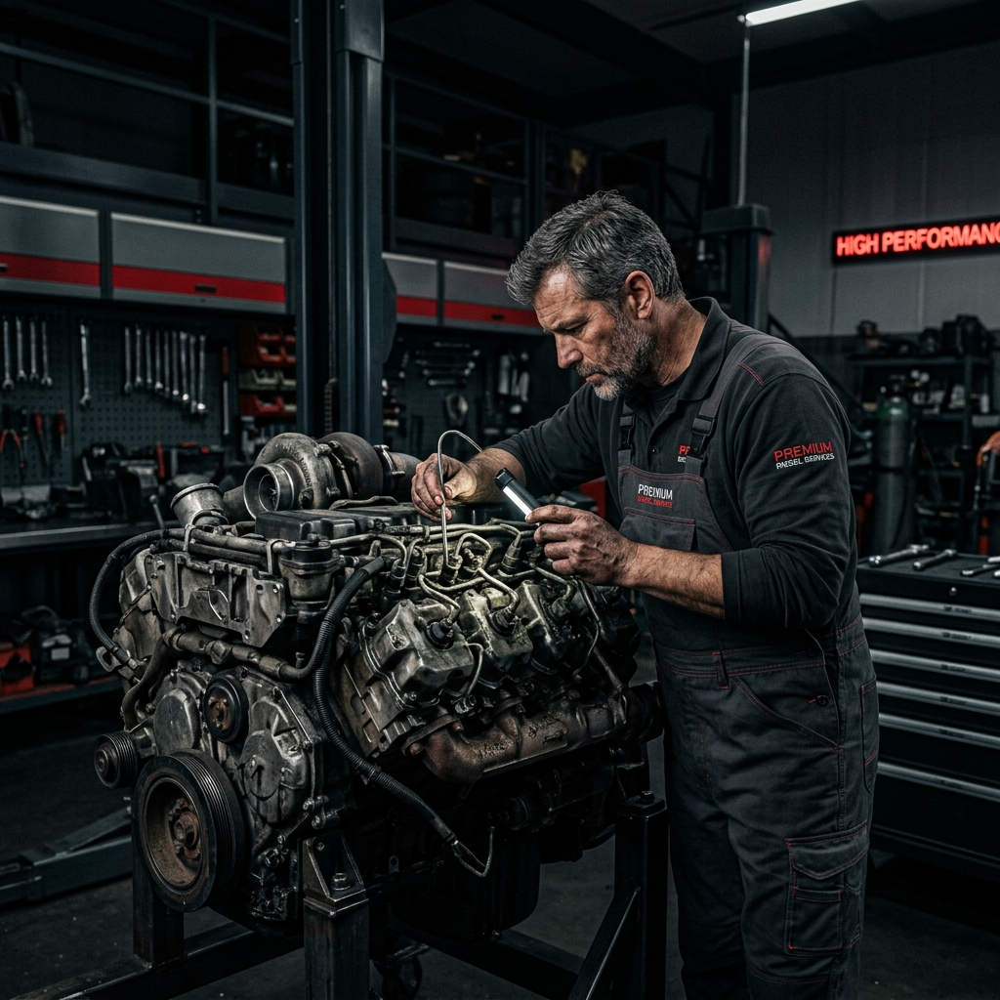

CRYO Radiator Coolant helps keep car engines and industrial machinery cool by controlling temperature and reducing overheating risk. Suitable for automobiles, commercial vehicles, generators, and industrial machinery cooling systems.
From the scorching summer heat to heavy-duty industrial workloads, engines require more than just water—they need a shield.
Key Benefits
- Helps protect engines from overheating
- Supports stable cooling system performance
- Suitable for cars, commercial vehicles, generators and industrial machinery
- Professional coolant solution for daily and heavy-duty use
The Premium Formula
What makes CRYO "Beyond Temperature"? It's our proprietary anti-rust and long-life formula. Standard coolants degrade quickly, leaving internal components vulnerable to scaling and corrosion. CRYO maintains a protective barrier, ensuring optimal heat transfer and extending the life of your radiator and water pump.
Whether you're pouring CRYO Red into a commercial generator, or CRYO Green into your daily driver, you're getting a product that has been rigorously formulated for stability.
Every batch of CRYO coolant undergoes strict laboratory testing to ensure it meets high automotive standards. From anti-corrosion properties to extreme boiling point resilience, we guarantee a formula that performs flawlessly under the toughest conditions.
Available in 1L and 4L packing with Red, Green and Blue variants, CRYO is the professional's choice for thermal management.
